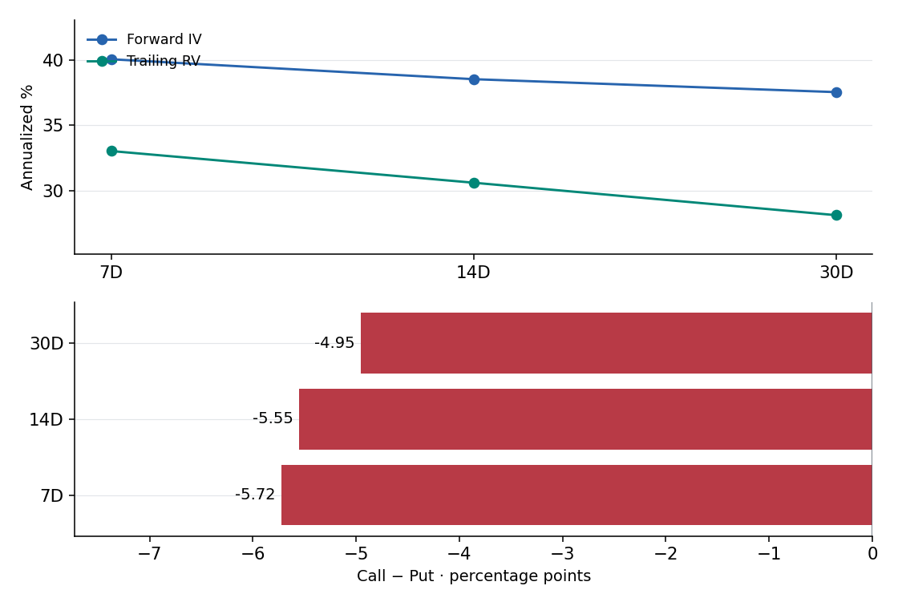
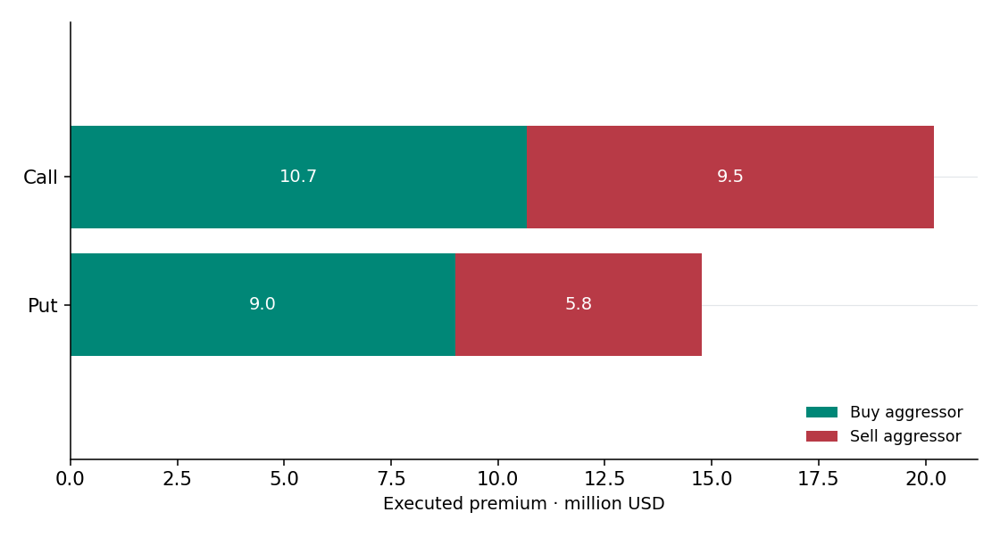
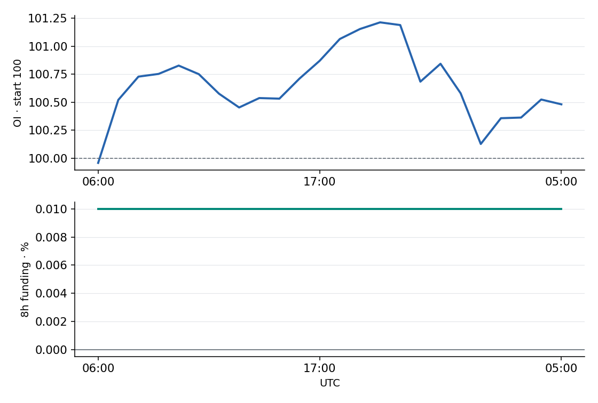
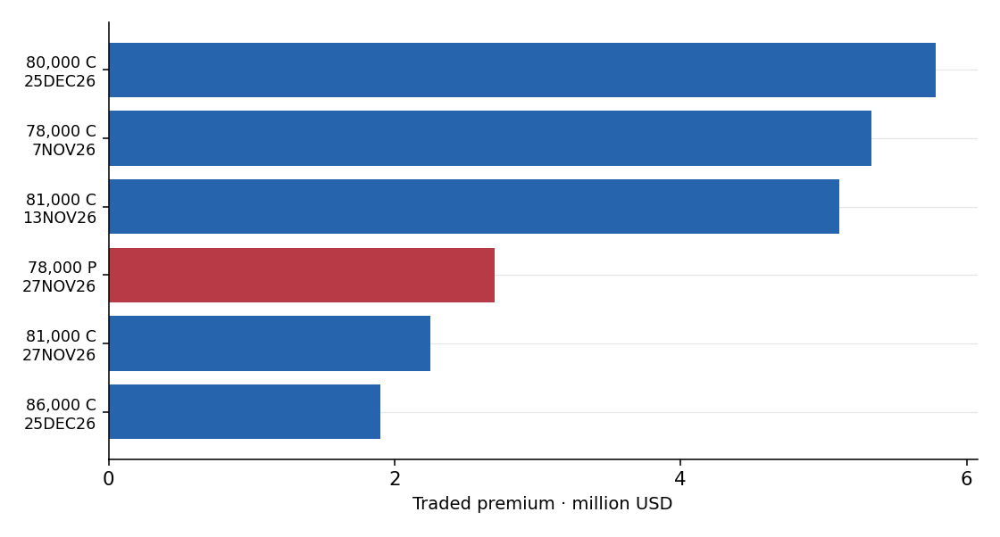

BTC Morning Options Note
Today's regime: Fragile. The gamma structure is now closer to amplifying moves than suppressing them, so price action can become more directional.
Risk asymmetry: Yalniz bu stok verilerinden bir yonun daha kolay gerceklesecegi kanitlanamaz.
Upside confirmation: Yukari kaynak dugumleri: 81,000 -> 82,000 -> 85,000. If price accepts above hedefi garantisi yok.
Downside trigger: Asagi kaynak dugumleri: 78,000 -> 76,000. Bant siniri bir gamma-flip hesabi degildir.
One-line desk note: 78,000-81,000 pozitif dugum yogunlugu; merkez 79,000. Ic negatif dugumler bulunabilir. 07NOV26 RR (call IV - put IV) -6.13. Put IV call IV uzerinde. Seviye and zaman icindeki degisim ayridir.
Expiry source: deribitGEX source: deribitLaevitas API: 21Public data: 1
Generated at 2026-11-06T05:01:08.209696+00:00What do derivatives add to the core report?
Volatility and leverage do not provide the same signal.
Report spot 75,804; selected GEX node band 78,000–81,000; spot is below the band. Trade flow does not prove those levels will hold; price response is separate evidence.
- Trailing 7D volatility 56.3%; 30D 36.9%. Recent movement is more volatile. 7D option IV 42.1%; gap to past 7D -14.3 points.
- Call buy−sell premium -2.07m USD; put buy−sell premium 0.17m USD. Keep the two separate: call premium share is not a bullish-bet share. Aggressor side alone does not identify the full strategy.
- Binance BTCUSDT open interest -0.87%; latest 8h funding 0.0047%. Positions are contracting; this does not measure spot buying strength. Observed long/short liquidations in the same window 106.07/9.47m USD; not market totals.
Confirmation conditions: Upside follow-up: price clearing the report upside nodes together with continued call-buy excess. Downside risk: loss of lower nodes alongside rising long liquidation/put demand. These are conditional follow-up checks, not observed confirmation or probabilities.
Pricing and trade evidence chartsCore Report
Bu ust bolum yalnizca savunulabilir katmanlari tutar: seviyeler, expiry destegi, GEX yapisi, opex gecisi and gunluk risk migrasyonu. Ham tape, behavioral and proxy bloklari appendix kismina alinir.
Daily Playbook
- Denge senaryosu: 78,000-81,000 yogunluk bolgesi; 79,000 merkezine yaklasma izlenir.
- Yukari senaryo: 82,000 ilk ust dugum; sonraki kaynak seviyesi 85,000. OI artisi tek basina alis teyidi degildir.
- Asagi senaryo: 78,000 altinda sonraki negatif dugum 76,000. Bant kirilimi tek basina dealer rejimi degistirmez.
Yesterday vs Today:
KEY LEVELS + TAKEAWAYS
Gamma is fragile/negative. MM hedging is more likely to amplify moves than suppress them.
Balance: 79,000 (weak)
UPSIDE TEST: 81,000 -> 82,000 -> 85,000
DOWNSIDE TEST: 78,000 -> 76,000
78,000 alti icin sonraki kaynak dugumu: 76,000.
Trigger Map
Squeeze trigger: 82,000
Sonraki yukari dugum: 85,000
Breakdown trigger: 78,000
Sonraki asagi dugum: 76,000
Reject above: 81,000
Reject below: 78,000
BTC Derivatives · Pricing and Trade Map
Volatility and leverage do not provide the same signal.
What is priced at each tenor?

Is call activity buying or selling?

Is leverage expanding?

Where are traded premiums concentrated?

No hourly options-flow timeline: provider bucket dates do not match the requested window. Chart aggregates reconcile with the separate call/put trades endpoint; timestamps were not shifted manually. Complete market coverage is not certified.
Measurements, timestamps and source scope
Matched-Horizon Volatility and Executed Flow
7D option IV 42.07%, trailing 7D RV 56.34%; difference -14.27 points. This is a premium to past movement, not a forecast or trade signal.
Current source · Observation: 2026-11-06T04:59:00+00:00 · Retrieval: 2026-11-06T05:00:29.936530+00:00
| Horizon | ATM IV | Trailing RV | IV − RV | 25 delta RR · Call − Put |
|---|---|---|---|---|
| 7D | 42.07% | 56.34% | -14.27 pp | -5.97 pp |
| 14D | 39.47% | 44.24% | -4.78 pp | -6.24 pp |
| 30D | 38.50% | 36.86% | 1.64 pp | -5.29 pp |
RV price source / last close: binance_BTCUSDT_close / 2026-11-06T00:00:00+00:00
IV looks forward; RV measures a trailing window of equal length. Both are annualized percent; their difference is percentage points. RV uses completed daily observations only. Constant-tenor IV is interpolated by the provider; edge extrapolation is possible. RR = call IV − put IV; positive means call premium.
Executed option trades · Deribit BTC
Current source · Observation: 2026-11-06T05:00:00+00:00 · Retrieval: 2026-11-06T05:00:30.294923+00:00
2026-11-05T05:00:00+00:00 → 2026-11-06T05:00:00+00:00
- Observed trades
- 13,287
- Traded premium · USD
- 67,340,571.77
- Call premium share
- 40.46%
- Buy − Sell · USD
- -1,905,973.93
- Block-trade premium · USD
- 24,497,244.18
These are provider aggregates of trade records, not OI changes. Buy/sell is the source classification; call volume alone is not a bullish position. Multi-leg strategies and complete market coverage are not certified.
Leverage context · Binance BTCUSDT
Current source · Observation: 2026-11-06T05:00:00+00:00 · Retrieval: 2026-11-06T05:00:30.573934+00:00
2026-11-05T05:00:00+00:00 → 2026-11-06T05:00:00+00:00
- OI change · matched window
- -0.87%
- 8h funding · last observation
- 0.0047%
- 8h funding · mean over 24h observations
- 0.0093%
Current source · Observation: 2026-11-06T05:00:00+00:00 · Retrieval: 2026-11-06T05:00:30.929640+00:00
- Observed long liquidations · USD
- 106,067,209.01
- Observed short liquidations · USD
- 9,473,924.71
Funding is an observed rate, not total payments. Positive funding generally costs longs; rising OI alone does not identify new longs. Liquidations are lower bounds from observed Binance BTCUSDT prints, not whole-market totals. Deribit liquidation coverage is unsupported.
Provider does not certify complete liquidation coverage.
Analitik kanitlar and arastirma detaylari
Behavioral Flow Edge
Crowd signal: Late retail-style put panic
Fade or Follow?: Fade downside panic unless spot is accepted below the breakdown trigger
Confidence: Moderate
- Crowd-chase score -3: late retail-style put panic.
- Fade or Follow?: Fade downside panic unless spot is accepted below the breakdown trigger.
- Kisa vadeli put talebi dususun arkasindan geliyor gibi duruyor. Bu akisin buyuk kismi gec hedge ise, 78,000 alti kalici acceptance gelmeden asagi follow-through sinyali tek basina strong sayilmaz.
Why the score looks like this:
- Put/Call imbalance (+0): put and call adding are close to balanced.
- Strike location vs spot (-2): Dominant new risk is clustering in put strikes below spot.
- Premium stress (+0): The IV-RV spread does not materially amplify this signal.
- Skew stress (-1): Skew is defensive and keeps downside tail risk expensive.

This chart shows which components are driving the score, so the signal is not reduced to a single label.

This chart helps distinguish whether the crowd has been in late put panic or late call chasing over time.
Morning Desk Note
78,000-81,000 pozitif dugum yogunlugu; merkez 79,000. Ic negatif dugumler bulunabilir. 07NOV26 RR (call IV - put IV) -6.13. Put IV call IV uzerinde. Seviye and zaman icindeki degisim ayridir.
Layered Trade Check
No clear setup / reduce size
Expected action: Do not size aggressively unless at least three layers line up.
| Layer | Long | Short | Read |
|---|---|---|---|
| Technical extreme | 2 | 0 | RSI(14) 34.3: approaching oversold / relief candidate. |
| Vol reaction | 1 | 0 | IV-RV spread -6.96: vol may not be pricing panic despite the drop. |
| Skew reaction | 0 | 1 | 25d RR is -3.81 points more defensive; skew is not relaxing. |
| Positioning filter | 0 | 2 | Spot is below the balance band / gamma is fragile; positioning makes downside continuation easier to activate. |

Geçmişte Ne Demişti?

BTC fiyatı üzerindeki işaretler katmanlı teyidin o gün long, short veya nötr tarafa eğildiğini gösterir. Alt panel long-short skor farkını izler.
Son 7 gün katmanlı teyit
| Tarih | Bias | Karar | Long | Short | Net |
|---|---|---|---|---|---|
| 2026-10-31 | Long adayi | Long setup var ama teyit eksik | 3 | 2 | +1 |
| 2026-11-01 | Long adayi | Long setup var ama teyit eksik | 2 | 1 | +1 |
| 2026-11-02 | Long bias | Relief long adayi strong | 4 | 0 | +4 |
| 2026-11-03 | Short bias | Downside devam setup'i strong | 1 | 4 | -3 |
| 2026-11-04 | Short adayi | Short/devam setup'i var ama teyit eksik | 0 | 3 | -3 |
| 2026-11-05 | Long bias | Relief long adayi strong | 5 | 0 | +5 |
| 2026-11-06 | Nötr / karisik | Net setup yok / boyut kucult | 3 | 3 | +0 |
Bu tablo son günleri net gösterir; grafikteki legend tüm tarih aralığında görülen sinyal tiplerini anlatır.
What Is This Looking For?
- RSI(14) 34.3: approaching oversold / relief candidate.
- Spot is near the Bollinger lower band (75,086) / z-score -1.69; technical pressure may have pushed too far.
- IV-RV spread -6.96: vol may not be pricing panic despite the drop.
- 25d RR is -3.81 points more defensive; skew is not relaxing.
- Spot is below the balance band / gamma is fragile; positioning makes downside continuation easier to activate.
- Spot 78,000 alti and inventory -1.22; savunmaci fiyatlama agirlikli.
Technical reference: Bollinger lower band 75,086, upper band 84,433.
This block is not a single signal; it checks whether technical extremes, vol reaction, skew behavior, and the positioning filter line up.
BTC Options Position Map (Clean)

Position Map Read
- The put hedge zone is 60,000-75,000; read this as the main downside protection zone. The strongest put pocket sits around 60,000.
- Magnet strike is 80,000; bu seviye en buyuk notional dugumu degil, daha cok denge / pin karakteri tasiyan strike olarak secilir. Spot bu seviyeye yaklastikca pin / geri cekilme etkisi daha anlamli hale gelebilir.
- The call positioning band is 80,000-90,000; acceptance near the upper edge of the zone opens room for upside extension. The strongest call concentration sits near 80,000.
- Lower down, there is a stronger hedge wall around 60,000; this should be read as a defense / protection anchor, not as the magnet.
- Spot 80,000 altinda; yukari hareketin daha temiz pozitif okumaya donmesi icin once magnet strike geri alinmali.
- The speculation-calls band is 90,000-110,000; this zone represents more distant OTM upside expectation. The strongest speculative call strike sits at 100,000.
- Tail hedge is 40,000; this is not a day-trading level, but a distant tail-risk reference. The strongest far-tail put sits near 40,000.
Levels: Tail Hedge 40,000 | Put Hedge 60,000-75,000 | Magnet 80,000 | Call Cluster 90,000 | Speculation 110,000
- Magnet strike was unchanged at 80,000.
- Put hedge zone 60,000-75,000 bandina kaydi (+0 / +1,000).
- Yukari call cluster / speculation tavanlari 90,000 and 110,000; gunluk kayma -10,000 / -10,000.
What changed today: magnet sabit | put defense moved closer | call cluster moved closer
- Magnet strike was unchanged at 80,000.
- Put hedge zone +500 puan shifted higher; downside protection moved closer to spot and strengthened.
- Put hedge zone spota yaklasti (6,489 -> 804); asagi savunma daha ilgili.
- Call cluster -10,000 puan asagi geldi; yakin upside positioning gucleniyor.
- The call cluster moved closer to spot (19,511 -> 14,196); near-upside interest increased.
- Tail hedge is is seviyesi degismedi and 40,000 olarak kaldi.
Expiry Support Map
Passive support thinning
Headline: Passive support is concentrated near the front; nearby expiries are still providing an active buffer.
Forward Verdict: Expected path: support does not disappear immediately, but it is spreading out on the calendar; the densest window is NOV26, after which the buffer becomes more selective.
- Today's passive support score 33/100; day over day -55, versus the last 5-session baseline -1.
- Of the visible expiry OI, 20.4% is concentrated within 14 days, 39.6% within 30 days, and 79.1% within 60 days.
- The densest passive-support window on the calendar is NOV26 (score 35.7); while the thinnest window is SEP27 (score 0.3).
- The structure is not fully emptied, but support is now carried more by a distributed calendar effect than by a single one-day expiry wall.

The top panel shows whether passive support has strengthened or weakened recently; the bottom panel shows which future expiry windows concentrate that support across the coming months.
GEX Expiry Structure

This chart shows the true expiry-by-expiry GEX distribution; it shows which maturities are carrying passive support and where negative-gamma risk is building.
Tek cumlelik okuma: Near-dated positive gamma should keep price action more controlled; as spot approaches negative-gamma pockets, moves can become more directional.
Day-over-Day GEX Change by Expiry

2026-11-05 -> 2026-11-06
Delta read: The front-end buffer thinned day over day; near-dated behavior may now be more fragile than it was one day ago.
Term Structure Read
Headline: The front expiry 6NOV26 carries positive gamma; passive support is present, but there is still a negative-gamma pocket in 7NOV26.
Front gamma roll-off risk: Low-to-moderate: support is not concentrated in a single expiry, so roll-off may be more gradual.
Next support expiry: 20NOV26: the next positive-gamma buffer sits here; support can rotate here first as the front expiry rolls off.
Gamma vacuum window: 7NOV26 area: the first nearby window after the front expiry carries negative gamma, so there is a risk of shifting from passive support to directional behavior.
- The strongest positive-gamma expiry is 27NOV26 (7,959,127); passive support is concentrated there most heavily.
- The riskiest negative-gamma expiry is 7NOV26 (-30,600,697); that window can make price action more directional.
- On vade 6NOV26 pozitif gamma ile 3,107,379; bu expiry gectikce pasif desteğin ilk nereye kayacagi term structure ile okunabilir.
- Front expiry bosalirken destek tamamen kaybolmak yerine 27NOV26 tarafina kayabilir.
- Total expiry-bazli GEX 2026-11-05 snapshot'ina gore -17,121,138 vs yesterday.
- The clearest support build was seen in 27NOV26 (+1,060,518).
- The clearest weakening was seen in 9NOV26 (-7,332,712).
Opex Calendar and Regime Transition
Headline: The opex calendar shows that support concentration around 27NOV26 and sonrasi icin kritiklestigini gosteriyor; destegin front expiry'den sonraki pencereye nasil devredilecegi ana okuma olmali.
- Support until shows how far front-end gamma support extends on the calendar.
- Highest roll-off risk date marks the expiry most likely to cause the biggest support loss or regime shift when it rolls off.
- Next stabilizing expiry shows where passive support is likely to rotate first if the front window weakens.
- Post-opex vacuum window describes the first fragile gap or negative-gamma pocket after expiry.
Upcoming Opex Calendar
| Expiry | DTE | Open Interest | OI Payi | GEX | Tag |
|---|---|---|---|---|---|
| 06NOV26 | 0 | $2,634,898,998 | 9.8% | +3,107,379 | Strong support |
| 07NOV26 | 1 | $371,305,548 | 1.4% | -30,600,697 | Fragile / risky |
| 08NOV26 | 2 | $75,794,840 | 0.3% | -488,199 | Fragile / risky |
| 09NOV26 | 3 | $491,583,127 | 1.8% | -7,332,712 | Fragile / risky |
| 13NOV26 | 7 | $1,562,672,818 | 5.8% | -178,395 | Fragile / risky |
| 20NOV26 | 14 | $373,394,312 | 1.4% | +1,044,296 | Strong support |
| 27NOV26 | 21 | $5,164,730,932 | 19.1% | +7,959,127 | Strong support |
| 25DEC26 | 49 | $10,670,987,977 | 39.6% | +1,189,677 | Strong support | Quarterly |
OI / GEX Migration
- Spot changed -4,686 vs yesterday.
- ATM spot IV changed by +1.24 points; front ATM IV changed by +14.98; net gamma changed by -5.529.
- Magnet strike was unchanged at 80,000.
- Put hedge zone +500 puan shifted higher; downside protection moved closer to spot and strengthened.
- Total expiry-bazli GEX 2026-11-05 snapshot'ina gore -17,121,138 vs yesterday.
- The clearest support build was seen in 27NOV26 (+1,060,518).
5-day reference: Spot -2,616, ATM IV +0.42. Rolling vade OI farki akis kaniti olarak gosterilmez.
Risk Migration Trend

Bu grafik spot, vol and net gamma'nin zaman icindeki kaymasini birlikte izler. Ana okuma ise riskin hangi strike and expiry'ye tasindigini migration notlariyla birlikte okumaktir.
Protection Demand / Skew Repositioning
Research composition / not signed trade flow
Headline: 07NOV26 RR (call IV minus put IV) -6.13. Put IV exceeds call IV.
- Rolling-front comparisons include maturity and DTE changes; they are not constant-tenor or same-contract flows.
- Historical front RR is recovered from front IV and normalized skew, never substituted from another expiry.
- OI changes cannot identify the initiating buyer or seller.
This block answers one question: is the market reducing downside protection, or is put premium still defensive? It is not a signed dealer-inventory claim.


Vol Market Intelligence
- Front-end ATM IV (07NOV26) 49.26, while back-end ATM IV is (20NOV26) 39.40. The front end is rich and the term structure shows clear backwardation.
- Front ATM IV is 6.96 points below 7-day realized vol. Spot has moved more aggressively than options premia imply, so there is underpriced-move risk.
- 25d RR -6.13; downside puts remain meaningfully richer than calls. That points to defensive tail-hedge demand.
- 10d RR -11.79 and 25d BF 2.06; that combination shows how elevated short-dated tail premium remains.
Front maturity: 06NOV26
Daily ATM IV change: +10.14
Weekly ATM IV change: +1.56
IV vs RV Comparison

The Laevitas historical RV endpoint is not available under this key, so realized vol is computed from public BTC daily close data.
Flow & Strategy Confirmation
Defensive
Flow score: Defensive / downside hedge flow (-2)
- Gorunen kontratlar arasinda son 24 saatin en buyuk OI artisi BTC-9NOV26-78000-C ($114,530,302); call OI artisi islem baslatan tarafin alici oldugunu kanitlamaz.
- At the same time, the clearest unwind came through BTC-27NOV26-84000-C, which suggests part of the old call risk was cleared.
- The largest strike-level net additions were concentrated around 69,000 and 75,000, making those zones the new center of short-dated attention.
- The sharpest net reduction came around 81,000 and 90,000, suggesting old positioning was pulled from that zone.
Strategy Verdict: Defensive
Dominant Action: Taze downside hedge
Trading Implication: Tape korunma tarafina yatkin; asagi senaryoyu yok saymak icin veri yok.
- On the LONG_PUT side, $985,602,048 of notional and 24,580 of OI were added; this points to fresh downside hedging.
- SHORT_CALL halen buyuk ($730,801,680) ama OI degisimi -4,350; bu, mevcut upside cap'lerin bir kisminin kapatildigina / gevsetildigine isaret ediyor.
- SHORT_PUT OI increased by 17,476; some participants are still selling downside and collecting carry.
- BULL_PUT_SPREAD OI artisi 83; yonlu iyimserlik var ama sinirli riskli / defined-risk yapilar tercih ediliyor.
Flow Change by Strike

Bu grafik son 24 saatte riskin hangi strike'lara tasindigini gosterir. Core raporda flow and strategy teyidini tek panelde tutuyoruz; ham tape ayrintisi appendix'te kaliyor.
Professional Final Read
- Kaynak GEX toplami -1.243; gercek dealer envanteri dogrulanmiyor.
- IV vadesi 07NOV26: 49.26; tarihsel 7G RV 56.22. Farkli ufuklar; bu fark tek basina ucuz/pahali opsiyon veya islem sinyali vermez.
- 07NOV26 RR (call IV - put IV) -6.13. Put IV call IV uzerinde. Seviye and zaman icindeki degisim ayridir.
- OI stok degisimi alici/satici yonunu gostermez. Kalicilik bu raporda sure/hacim kuraliyla olculmus bir teyit degildir.
Appendix
Bu alt bolum karar omurgasina girmeyen ama referans icin yararli olan behavioral, ham flow tape, gamma node and proxy bloklarini toplar.
Flow Heatmap

The heatmap shows exactly where call and put flow is concentrated around spot.
Daily / Weekly / Monthly Flow Note
Daily:
- Today's dominant strike-flow change appeared around 69,000 and 75,000.
Weekly:
- Son 5 gunluk yerel kayitta akis en cok 81,000 and 100,000 strike'larinda birikmis.
Monthly:
- The 20-day accumulation is more call-dominant.
ATM IV Expiry Structure

| Expiry | ATM IV | 25d RR | 25d BF |
|---|---|---|---|
| 06NOV26 | 43.34 | 0.00 | 0.00 |
| 07NOV26 | 49.26 | -6.13 | 2.06 |
| 08NOV26 | 39.89 | -4.91 | 1.98 |
| 09NOV26 | 38.33 | -4.73 | 1.71 |
| 13NOV26 | 42.27 | -6.90 | 1.69 |
| 20NOV26 | 39.40 | -6.52 | 1.55 |
| 24SEP27 | 39.92 | -1.99 | 0.99 |
| 25DEC26 | 38.26 | -5.00 | 1.29 |
Strategy Tape

Dominant tone: constructive
- The strongest strategy pressure came from LONG_PUT, with roughly $985,602,048 of notional and 24,580 of OI change driving the tape.
- The strategy tape is broadly constructive; short puts, long calls, and bull-spread style structures are outweighing defensive trades.
| Strategy | Notional | OI Change | Delta |
|---|---|---|---|
| LONG_PUT | $985,602,048 | 24,580 | -1924.6 |
| SHORT_PUT | $754,951,028 | 17,476 | 1746.3 |
| SHORT_CALL | $730,801,680 | -4,350 | -878.9 |
| LONG_CALL | $535,525,538 | -202 | 610.2 |
| LONG_CALL_CONDOR | $456,009,140 | 6,000 | 196.5 |
| CUSTOM_STRATEGY | $276,822,936 | 652 | 16.9 |
| BULL_CALL_SPREAD | $63,254,921 | -121 | 62.2 |
| BULL_PUT_SPREAD | $57,358,758 | 83 | 59.5 |
Strategy Flow Read
Defensive
Strategy Verdict: Defensive
Dominant Action: Taze downside hedge
Trading Implication: Tape korunma tarafina yatkin; asagi senaryoyu yok saymak icin veri yok.
Headline: Tape'in baskin mesaji taze downside hedge.
- On the LONG_PUT side, $985,602,048 of notional and 24,580 of OI were added; this points to fresh downside hedging.
- SHORT_CALL halen buyuk ($730,801,680) ama OI degisimi -4,350; bu, mevcut upside cap'lerin bir kisminin kapatildigina / gevsetildigine isaret ediyor.
- SHORT_PUT OI increased by 17,476; some participants are still selling downside and collecting carry.
- BULL_PUT_SPREAD OI artisi 83; yonlu iyimserlik var ama sinirli riskli / defined-risk yapilar tercih ediliyor.
Strategy Action Map

This chart does not summarize strategy names; it shows which actions dominate the tape. Use it to read the table quickly.

Estimated Roll / Transfer: Because the current strategy endpoint does not expose leg-level data, this section is an inferred transfer read.
- The inferred put-strike transfer is 73,000 -> 69,000 lower, which implies the hedge level is being repositioned.
- On the call side, the strongest addition was BTC-9NOV26-78000-C, while the strongest reduction was BTC-27NOV26-84000-C; this suggests upside positioning may be moving from 27NOV26 to 9NOV26.
- The inferred call-strike transfer moved lower from 84,000 to 78,000, which may indicate a repositioning of the upside target / cap.
- The center of net strike flow moved from 81,000 to 69,000'a asagiya kayiyor; bu da yeni ilginin hangi strike'a toplandigini gosteriyor.
What Does It Mean?
- Roll / extend: protection may not be closing; it may be moving further out the curve.
- Fresh hedge: new downside risk may be getting added, or existing long risk may be getting protected.
- Cap / overwrite: upside may be getting sold to limit extension.
- Unwind: prior cap or hedge structures may be getting relaxed.
- Defined-risk bullish: participants may prefer limited-risk structures such as spreads instead of chasing upside outright.
Dealer Pressure Map (Proxy)

This chart is a proxy map that combines current GEX, strike OI, and 24h strike flow. It is not true MM inventory; it shows where upside/downside pressure is concentrated across strikes.

2026-11-05 -> 2026-11-06
Daily delta read: The clearest day-over-day downside shift was around 81,000; even if the main map still looks similar, fresh pressure rotated toward the defensive side.
- The strongest upside centers are 80,000, 90,000, 85,000; these strikes combine call-heavy positioning, positive gamma, and/or fresh flow.
- The strongest downside hedge pockets are 72,000, 75,000, 74,000; these zones are where downside protection remains most concentrated.
- The clearest chain shift over the last 24 hours occurred at 69,000 on the upside (+105.0mn); this level should be read as a new short-dated focus area.
- This map is not true dealer inventory; it is a proxy pressure score derived from strike OI, GEX, and 24-hour strike flow.
- The top map reflects structural stock-like positioning, so the same strikes can look similar for several days in a row.
- The delta chart below shows whether more upside or downside pressure accumulated at the same strikes versus yesterday.
Chain Table v1
| Strike | Call Notional | Put Notional | Net OI | 24s Net Flow | Net GEX |
|---|---|---|---|---|---|
| 90,000 | $1,119,070,092 | $62,365,436 | +1056.7mn | -65.1mn | +0.17 |
| 85,000 | $1,002,181,484 | $97,541,184 | +904.6mn | -60.8mn | +0.18 |
| 82,000 | $952,914,060 | $194,894,164 | +758.0mn | +15.8mn | +0.10 |
| 80,000 | $1,237,801,645 | $508,742,909 | +729.1mn | +25.3mn | +0.33 |
| 88,000 | $705,824,082 | $25,093,834 | +680.7mn | -37.1mn | +0.16 |
| 74,000 | $33,728,043 | $661,463,264 | -627.7mn | +43.6mn | -0.56 |
| 75,000 | $182,250,439 | $681,902,954 | -499.7mn | +102.3mn | -0.98 |
| 72,000 | $107,588,193 | $648,024,178 | -540.4mn | -54.2mn | -0.26 |
| 86,000 | $502,309,210 | $46,260,524 | +456.0mn | -27.9mn | +0.14 |
| 84,000 | $560,375,331 | $151,248,207 | +409.1mn | +33.3mn | +0.11 |
| 70,000 | $219,518,949 | $602,759,896 | -383.2mn | +30.1mn | -0.15 |
| 62,000 | $32,387,670 | $385,773,977 | -353.4mn | +37.5mn | -0.05 |
| 81,000 | $393,016,054 | $91,691,817 | +301.3mn | -89.5mn | +0.18 |
| 68,000 | $95,966,857 | $397,778,151 | -301.8mn | +24.3mn | -0.10 |
Proxy Hedge-Impact Surface

This chart does not use true dealer inventory; it idealizes whether hedge impact would behave in a more stabilizing or more fragile way if spot moved across different levels, using strike OI, proxy pressure, and GEX.
Headline: The proxy model suggests spot is still sitting in a fragile pocket; moves are more likely to amplify than to be absorbed.
One-line read: Local gamma tone around spot is negative (-1.82); this implies the idealized hedge effect can lean toward amplifying moves.

2026-11-05 -> 2026-11-06
Day over day: Proxy hedge-impact skoru day over day weakladi; hedge etkisi daha kirilgan bir rejime kayiyor olabilir.
How To Read It
Fragile / short-gamma-like
- This section is not true dealer positioning; it is a scenario-based hedge-impact exercise derived from strike OI, proxy pressure, and GEX.
- A positive score implies a long-gamma-like pocket where dealers are more likely to absorb moves; a negative score implies more fragile short-gamma-like behavior.
- The strongest stabilizing pocket appears near 80,804, while the most fragile pocket appears near 74,804.
- Local gamma tone around spot is negative (-1.82); this implies the idealized hedge effect can lean toward amplifying moves.
- This trend is not true dealer positioning; it shows the time series of the proxy hedge-impact score built from daily snapshots.
- On the latest daily move, the stabilizing pocket shifted by -186 points and the fragile pocket shifted by +814 points.
Gamma Map

Key Gamma Nodes
Positive
| Strike | Net | Call | Put |
|---|---|---|---|
| 80000 | 0.326 | 0.559 | -0.233 |
| 78000 | 0.273 | 0.491 | -0.218 |
| 85000 | 0.180 | 0.216 | -0.036 |
| 81000 | 0.176 | 0.215 | -0.039 |
| 90000 | 0.169 | 0.185 | -0.016 |
Negative
| Strike | Net | Call | Put |
|---|---|---|---|
| 75000 | -0.977 | 0.107 | -1.084 |
| 74000 | -0.564 | 0.014 | -0.578 |
| 76000 | -0.526 | 0.146 | -0.672 |
| 72000 | -0.262 | 0.040 | -0.302 |
| 75500 | -0.173 | 0.019 | -0.192 |
Spot Location: Spot is currently below the positive-gamma balance band; below 78,000 is now a transition / weakening zone.
Behavior In This Zone: 78,000-81,000 pozitif dugum yogunlugu; merkez 79,000. Ic negatif dugumler bulunabilir.
Behavior In Positive Gamma: Kaynak GEX toplami -1.243; gercek dealer envanteri dogrulanmiyor.
Transition Zone: OI stok degisimi alici/satici yonunu gostermez. Kalicilik bu raporda sure/hacim kuraliyla olculmus bir teyit degildir.
Behavior In Negative Gamma: Asagi kaynak dugumleri: 78,000 -> 76,000. Bant siniri bir gamma-flip hesabi degildir.
Where To Look For Shorts?: OI stok degisimi alici/satici yonunu gostermez. Kalicilik bu raporda sure/hacim kuraliyla olculmus bir teyit degildir.
Where To Look For Longs?: OI stok degisimi alici/satici yonunu gostermez. Kalicilik bu raporda sure/hacim kuraliyla olculmus bir teyit degildir.
No-Trade / Unconfirmed Zone: OI stok degisimi alici/satici yonunu gostermez. Kalicilik bu raporda sure/hacim kuraliyla olculmus bir teyit degildir.
Base Case: 78,000-81,000 pozitif dugum yogunlugu; merkez 79,000. Ic negatif dugumler bulunabilir.
Fresh Positioning
| Expiry | 24h OI Change | BTC Change |
|---|---|---|
| 06NOV26 | $404,031,226 | 8,479 |
| 06NOV26 | $-442,756 | 3 |
| 07NOV26 | $229,179,055 | 3,519 |
| 07NOV26 | $2,261,206 | 33 |
| 08NOV26 | $2,237,420 | 30 |
| 08NOV26 | $249,030,814 | 3,345 |
Volatility Context
Reference expiry: 25DEC26
Forward: 76,246.75
ATM spot IV: 38.34
25d skew: 13.15
25d RR: -5.04
10d fly: 4.42
Dealer Inventory Proxy

Net tone: Arastirma proxy: -1.22; dealer pozisyonu degil (-1.22)
This chart is not true MM inventory; it is a proxy score built from gamma, flow, skew, IV-RV, and the strategy tape.

As the local archive grows, this chart should give a cleaner view of MM/dealer tone through time.
Trigger Rules
- Yukari kaynak dugumleri: 81,000 -> 82,000 -> 85,000. If price accepts above hedefi garantisi yok.
- Asagi kaynak dugumleri: 78,000 -> 76,000. Bant siniri bir gamma-flip hesabi degildir.
- OI stok degisimi alici/satici yonunu gostermez. Kalicilik bu raporda sure/hacim kuraliyla olculmus bir teyit degildir.
Dealer Read
- Kaynak GEX toplami -1.243; gercek dealer envanteri dogrulanmiyor.
- 78,000-81,000 pozitif dugum yogunlugu; merkez 79,000. Ic negatif dugumler bulunabilir.
- OI stok degisimi alici/satici yonunu gostermez. Kalicilik bu raporda sure/hacim kuraliyla olculmus bir teyit degildir.
Crowding Read
- Call notional is still 1.48x put notional, and open-interest count is 1.48x in favor of calls. This is not panic hedging; it is constructive positioning.
- The largest call clusters near spot sit at 80,000, 90,000, 85,000; the largest put clusters sit at 75,000, 74,000, 72,000.
- The next-day expiry 07NOV26 is only 1.4% of total visible expiry OI, so on its own it is unlikely to drag the full band unless spot trades directly into crowded strikes.
What the Market Is Pricing
- The market is pricing orderly downside protection rather than crash panic: 25DEC26 in the 25-delta risk reversal -5.04, context, while 25-delta skew is 13.15.
- ATM spot IV is is 38.34; risk is being taken seriously, but this alone does not signal disorder.
- Fresh risk is still being added to the front of the expiry curve: roughly $229,179,055 was added to the next-day expiry over the last 24 hours.
What the Market May Be Missing
- As long as spot holds above 78,000, the band does not look primed for a violent downside break; there is still a large amount of positive gamma above and around the market.
- At the same time, the market is not aggressively pricing a clean upside breakout. 80,000 and 90,000 heavy call positioning in that area can limit chase behavior unless spot clears those levels on volume.
- The larger hidden risk is a regime shift below 75,000, where dealer hedging may start amplifying moves rather than absorbing them.
Vanna / Charm Proxy
Low compression / freer price discovery
Weak
Takeaway: Decay flow etkisi weak; bu bolum tek basina vol compression beklemek icin yeterli sinyal vermiyor.
- This section does not calculate direct vanna/charm greeks; it is a proxy built from near-dated OI concentration, positive gamma, proximity to the pin center, and IV premium.
- Front expiry 07NOV26 with roughly 1 days remaining. The share of OI expiring within 3 days is 13.2, and within 7 days it is 19.0.
- There is no meaningful quarterly expiry concentration over the next 7 days.
- Charm proxy 51: yakin vade OI yogunlugu orta and dealer gamma ile birlikte spotta zaman-decay kaynakli pin baskisi sinirli.
- Vanna proxy 7: front IV premium versus realized vol (-6.96) and the gamma tone suggest that if vol mean-reverts lower, hedge flows may only provide limited stabilizing support.
- Net read: low compression / freer price discovery. Spot-to-pin proximity score is 36%, gamma support is 0.

This chart does not show true greeks; it combines near-dated expiry concentration, quarterly pressure, gamma support, proximity to the pin center, and IV premium in a single panel.
Checklist:
- Spot 78,000-81,000 bandinda kaldikca compression proxy daha anlamli calisir.
- 80,000 ustu acceptance gelirse pin baskisi weaklar, proxy'nin yonlendiriciligi duser.
- If the IV-RV spread closes quickly, the vanna component weakens; watch from the -6.96 level.
Expiry Structure

| Expiry | Open Interest | Call OI (BTC) | Put OI (BTC) | Call Notional | Put Notional | 24h OI Change |
|---|---|---|---|---|---|---|
| 25DEC26 | $10,670,987,977 | 83,524 | 56,454 | $6,367,329,669 | $4,303,658,308 | veri yok |
| 27NOV26 | $5,164,730,932 | 37,113 | 30,915 | $2,817,643,979 | $2,347,086,953 | veri yok |
| 26MAR27 | $3,481,464,304 | 27,535 | 17,517 | $2,127,815,023 | $1,353,649,281 | veri yok |
| 06NOV26 | $2,634,898,998 | 25,336 | 9,481 | $1,917,376,950 | $717,522,047 | veri yok |
| 13NOV26 | $1,562,672,818 | 9,224 | 11,408 | $698,615,043 | $864,057,775 | veri yok |
| 25JUN27 | $1,255,738,474 | 9,972 | 6,062 | $780,951,762 | $474,786,713 | veri yok |
| 24SEP27 | $496,611,455 | 3,560 | 2,694 | $282,655,970 | $213,955,485 | veri yok |
| 09NOV26 | $491,583,127 | 6,140 | 354 | $464,778,834 | $26,804,293 | veri yok |
Nearest Expiry Detail
Front Expiry Verdict: The front expiry is put-heavy and protection costs are clearly dominant.
- The nearest expiry is 06NOV26; total notional is $2,634,898,998 and total OI is about 34,818 BTC.
- Call OI is 25,336 BTC, put OI is 9,481 BTC; put OI share is 27.2%.
- Call notional is $1,917,376,950, put notional is $717,522,047; put notional share is 27.2%.
- Call premium is $255,466, put premium is $11,500,900; put premium share is 97.8%.
Expiry Close Read
- Positioning: Front-expiry positioning is call-heavy.
- Premium: Kaynak premium alani; gerceklesmis nakit prim odemesi olarak dogrulanmadi.
- Post-Expiry Implication: Expiry sonu acik kontratlari kapatir; ilk fiyat yonu yalniz call/put dagilimindan belirlenemez.
- Expected First Effect: Expiry sonu acik kontratlari kapatir; ilk fiyat yonu yalniz call/put dagilimindan belirlenemez.
- Confirmation Needed: OI stok degisimi alici/satici yonunu gostermez. Kalicilik bu raporda sure/hacim kuraliyla olculmus bir teyit degildir. Yukari kaynak dugumleri: 81,000 -> 82,000 -> 85,000. If price accepts above hedefi garantisi yok.
- Negative Trigger: Asagi kaynak dugumleri: 78,000 -> 76,000. Bant siniri bir gamma-flip hesabi degildir.
How To Read The Front Expiry
- Call OI shows which expiry is carrying the open upside risk.
- Put OI shows the weight of downside protection or speculative downside demand.
- Premium, kaynagin raporladigi alandir; gerceklesmis nakit prim odemesi veya islem baslatan taraf bu alandan dogrulanmaz.
- If the expiry that closes tomorrow is large and put-premium heavy, the post-expiry hedge unwind effect can matter more.
IV Percentile and Rank
Rolling front / descriptive only
Local position only; changing maturity prevents a buy/sell-vol bias. Read the matched-horizon 7D/14D/30D IV-RV panel separately.
- Measured IV: expiry 07NOV26, 49.26%. Not fixed-tenor 7D IV.
- Local percentile 87: share of observations below current IV. Zero does not mean zero IV.
- Raw rank 63; adjusted rank 87. Neither is a price target or expected return.
- Selected front expiry and days to expiry change across the archive. This is not a constant-tenor cheap/rich test.
- Prior local IV range: 15.08% - 69.29%; sample includes today, 246 observations.

Percentile shows how often today's implied vol sits in an expensive zone versus the local sample; rank shows how high it sits inside the min-max range.
Vol checklist:
- Did the selected expiry or days to expiry change?
- What do fixed-tenor 7D/14D/30D IV and matched trailing RV show?
- Are the local low, expiry changes and market movement separated?
Normalized 25D Skew

Current ratio: 0.124
This metric is the ratio of the 25-delta put vol minus the 25-delta call vol to ATM IV. When the ratio rises, the market is pricing puts richer than calls.
Skew Read
- Front 25D RR: -6.13
- Front ATM IV: 49.26
- As long as the normalized ratio stays elevated, downside protection remains more expensive than call demand.
Pain Drift

- Today's aggregate max-pain level is 78,000.
- The gap between spot and max pain is -2,196 points.
- The daily pain shift is +0 points; the spot-pain gap changed by -4,686 points.
- The 5-day pain shift is +0 points.
Largest Instrument OI Additions
| Instrument | OI Change | Total Notional | Open Interest |
|---|---|---|---|
| BTC-9NOV26-78000-C | $114,530,302 | $114,689,267 | 1,513 |
| BTC-9NOV26-80000-C | $113,711,538 | $113,711,538 | 1,502 |
| BTC-9NOV26-82000-C | $113,666,120 | $113,666,120 | 1,502 |
| BTC-9NOV26-84000-C | $113,575,284 | $113,575,284 | 1,500 |
| BTC-27NOV26-69000-P | $103,683,239 | $126,955,849 | 1,380 |
| BTC-6NOV26-75000-P | $71,454,097 | $92,053,661 | 1,006 |
| BTC-27NOV26-74000-P | $66,388,564 | $167,465,814 | 924 |
| BTC-27NOV26-60000-P | $57,085,972 | $73,164,750 | 827 |
Largest Instrument OI Reductions
| Instrument | OI Change | Total Notional | Open Interest |
|---|---|---|---|
| BTC-27NOV26-84000-C | $-53,836,491 | $113,387,521 | -580 |
| BTC-27NOV26-81000-C | $-43,222,974 | $91,788,090 | -491 |
| BTC-27NOV26-73000-P | $-39,184,599 | $99,858,457 | -436 |
| BTC-27NOV26-82000-C | $-37,484,057 | $80,765,239 | -411 |
| BTC-27NOV26-72000-P | $-33,519,072 | $73,217,894 | -342 |
| BTC-7NOV26-78000-C | $-31,841,326 | $52,638,841 | -337 |
Strike-Level OI Additions
| Strike | Call Change | Put Change | Net |
|---|---|---|---|
| 69000 | $-12,405 | $105,049,925 | $105,037,520 |
| 75000 | $1,765,725 | $100,556,722 | $102,322,447 |
| 78000 | $86,420,954 | $-30,003,964 | $56,416,990 |
| 58000 | $-287,150 | $46,715,341 | $46,428,191 |
| 74000 | $9,893,625 | $33,657,716 | $43,551,341 |
| 62000 | $-2,060,244 | $39,590,238 | $37,529,995 |
| 84000 | $42,994,729 | $-9,651,626 | $33,343,103 |
| 70000 | $-15,231,007 | $45,301,581 | $30,070,573 |
Strike-Level OI Reductions
| Strike | Call Change | Put Change | Net |
|---|---|---|---|
| 81000 | $-80,012,755 | $-9,442,879 | $-89,455,634 |
| 90000 | $-61,579,677 | $-3,523,017 | $-65,102,694 |
| 85000 | $-55,366,828 | $-5,444,539 | $-60,811,367 |
| 72000 | $-5,127,660 | $-49,051,048 | $-54,178,708 |
| 95000 | $-52,080,740 | $-759,624 | $-52,840,364 |
| 73000 | $-285,057 | $-44,419,505 | $-44,704,561 |
| 88000 | $-35,704,242 | $-1,419,136 | $-37,123,378 |
| 120000 | $-33,248,065 | $-269,185 | $-33,517,250 |